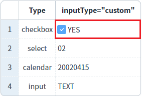
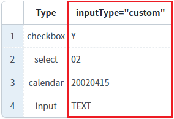
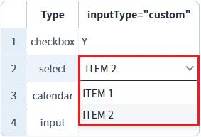
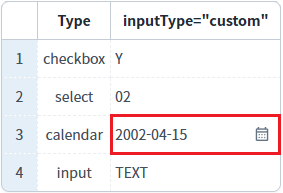
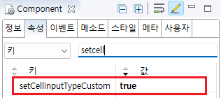
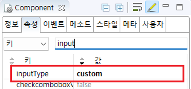
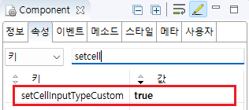
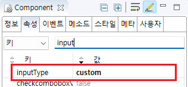
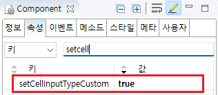

[GridView] 셀의 inputType을 동적으로 변경하기 - 스크립트
1개요
GridView 셀의 'inputType'을 스크립트로 변경하는 예제입니다. 이 기능은 GridView의 'setCellInputType' 메소드를 사용하여 구현할 수 있습니다. 이를 위해서는 GridView의 'setCellInputTypeCustom' 속성을 'true'로 설정하고, 바디 컬럼의 'inputType' 속성을 'custom'으로 설정해야 합니다.
2구현된 기능
GridViw 셀의 inputType 변경하기
3예제 테스트 방법
3.1GridViw 셀의 inputType을 checkbox로 변경하기
1
STEP 1: GridView의 InputType을 확인합니다.
'inputType="custom"' 컬럼의 'inputType' 속성이 기본 설정 값인 'text'임을 확인합니다.
Image 1.브라우저(Chrome) 실행 예시

2
STEP 2: GridView 셀의 InputType 변경하기
'1번째 행의 inputType을 "checkbox"로 변경하기' 버튼을 클릭합니다.
3
STEP 3: 실행 결과를 확인합니다.
1번째 행의 'inputType="custom"' 컬럼의 InputType이 checkbox로 변경됨을 확인합니다.
Image 2.브라우저(Chrome) 실행 예시

3.2GridViw 셀의 inputType을 select로 변경하기
1
STEP 1: GridView의 InputType을 확인합니다.
'inputType="custom"' 컬럼의 'inputType' 속성이 기본 설정 값인 'text'임을 확인합니다.
Image 3.브라우저(Chrome) 실행 예시

2
STEP 2: GridView 셀의 InputType 변경하기
'2번째 행의 inputType을 "select"로 변경하기' 버튼을 클릭합니다.
3
STEP 3: 실행 결과를 확인합니다.
2번째 행의 'inputType="custom"' 컬럼의 InputType이 select로 변경됨을 확인합니다.
Image 4.브라우저(Chrome) 실행 예시

3.3GridViw 셀의 inputType을 calendar로 변경하기
1
STEP 1: GridView의 InputType을 확인합니다.
'inputType="custom"' 컬럼의 'inputType' 속성이 기본 설정 값인 'text'임을 확인합니다.
Image 5.브라우저(Chrome) 실행 예시

2
STEP 2: GridView 셀의 InputType 변경하기
'3번째 행의 inputType을 "calenar"로 변경하기' 버튼을 클릭합니다.
3
STEP 3: 실행 결과를 확인합니다.
3번째 행의 'inputType="custom"' 컬럼의 InputType이 calendar로 변경됨을 확인합니다.
Image 6.브라우저(Chrome) 실행 예시

4구현 예시
4.1GridViw 셀의 inputType을 checkbox로 변경하기
1
STEP 1: GridView의 속성을 정의합니다.
[필수] setCellInputTypeCustom="true"
inputType이 custom인 셀의 inputType을 동적으로 변경하기 위한 옵션. (typeGetter와 동시에 사용 불가)
Image 7.웹스퀘어 스튜디오의 Component View - 속성 설정 예시

2
STEP 2: GridView 바디 컬럼의 속성을 정의합니다.
동적으로 inputType을 지정할 바디 컬럼의 속성을 아래와 같이 정의합니다.
예제 파일에서는 바디 컬럼의 ID "type_value"에 정의되었습니다.
[필수] inputType="custom"
동적으로 inputType을 설정.
Image 8.웹스퀘어 스튜디오의 Component View - 속성 설정 예시

Example 1.Source
<!-- gridView 의 소스 본문 예시 --> <w2:gridView setCellInputTypeCustom="true" id="grd_exam1" dataList="data:dlt_exam1"> <!-- 중략 --> <w2:gBody id="gBody1"> <w2:row id="row2"> <!-- 중략 --> <w2:column inputType="custom" id="type_value"> </w2:column> <!-- 중략 --> </w2:row> </w2:gBody> </w2:gridView>
3
STPE3. 스크립트를 작성합니다.
GridView의 'setCellInputType' 메소드를 사용하여 셀의 inputType을 변경하는 스크립트를 작성합니다. 세부 설정은 아래의 스크립트에 작성되었습니다.
Example 2.Script
//예제 파일의 스크립트 "scwin.btn_ex1_onclick"를 참고하세요. var strRowIndex = 0; //변경할 행의 index var strColID = "type_value"; //변경할 열의 ID //중복되지 않는 GridVIew의 셀 ID 생성 var strID = "dynamic_select_" + strRowIndex + "_" + strColID; //inputType 정보 var jsnCellInfo = { id : strID, inputType : "checkbox", options : {viewType: "icon"}, options : {valueType: "other", trueValue: "Y", falseValue: "N", checkboxLabel: "YES" } }; //GridView "grd_exam1"의 셀 inputType을 변경합니다. grd_exam1.setCellInputType(strRowIndex, strColID, jsnCellInfo);
4.2GridViw 셀의 inputType을 select로 변경하기
1
STEP 1: GridView의 속성을 정의합니다.
[필수] setCellInputTypeCustom="true"
inputType이 custom인 셀의 inputType을 동적으로 변경하기 위한 옵션. (typeGetter와 동시에 사용 불가)
Image 9.웹스퀘어 스튜디오의 Component View - 속성 설정 예시

2
STEP 2: GridView 바디 컬럼의 속성을 정의합니다.
동적으로 inputType을 지정할 바디 컬럼의 속성을 아래와 같이 정의합니다.
예제 파일에서는 바디 컬럼의 ID "type_value"에 정의되었습니다.
[필수] inputType="custom"
동적으로 셀의 'inputType'을 설정.
Image 10.웹스퀘어 스튜디오의 Component View - 바디 컬럼 속성 설정 예시

Example 3.Source
<!-- gridView 의 소스 본문 예시 --> <w2:gridView setCellInputTypeCustom="true" id="grd_exam1" dataList="data:dlt_exam1"> <!-- 중략 --> <w2:gBody id="gBody1"> <w2:row id="row2"> <!-- 중략 --> <w2:column inputType="custom" id="type_value"> </w2:column> <!-- 중략 --> </w2:row> </w2:gBody> </w2:gridView>
3
STPE3. 스크립트를 작성합니다.
GridView의 'setCellInputType' 메소드를 사용하여 셀의 inputType을 변경하는 스크립트를 작성합니다. 세부 설정은 아래의 스크립트에 작성되었습니다.
Example 4.Script
//예제 파일의 스크립트 "scwin.btn_ex2_onclick"를 참고하세요. var strRowIndex = 1; //변경할 행의 index var strColID = "type_value"; //변경할 열의 ID //중복되지 않는 GridVIew의 셀 ID 생성 var strID = "dynamic_select_" + strRowIndex + "_" + strColID; //inputType 정보 var jsnCellInfo = { id : strID, inputType : "select", options : {viewType: "icon"}, itemSet : { nodeset: "data:dlt_code", label: "label", value: "code" } }; //GridView "grd_exam1"의 셀 inputType을 변경합니다. grd_exam1.setCellInputType(strRowIndex, strColID, jsnCellInfo);
4.3GridViw 셀의 inputType을 calendar로 변경하기
1
STEP 1: GridView의 속성을 정의합니다.
[필수] setCellInputTypeCustom="true"
inputType이 custom인 셀의 inputType을 동적으로 변경하기 위한 옵션. (typeGetter와 동시에 사용 불가)
Image 11.웹스퀘어 스튜디오의 Component View - 속성 설정 예시

2
STEP 2: GridView 바디 컬럼의 속성을 정의합니다.
동적으로 inputType을 지정할 바디 컬럼의 속성을 아래와 같이 정의합니다.
예제 파일에서는 바디 컬럼의 ID "type_value"에 정의되었습니다.
[필수] inputType="custom"
동적으로 셀의 'inputType'을 설정.
Image 12.웹스퀘어 스튜디오의 Component View - 바디 컬럼 속성 설정 예시
Example 5.Source
<!-- gridView 의 소스 본문 예시 --> <w2:gridView setCellInputTypeCustom="true" id="grd_exam1" dataList="data:dlt_exam1"> <!-- 중략 --> <w2:gBody id="gBody1"> <w2:row id="row2"> <!-- 중략 --> <w2:column inputType="custom" id="type_value"> </w2:column> <!-- 중략 --> </w2:row> </w2:gBody> </w2:gridView>
3
STPE3. 스크립트를 작성합니다.
GridView의 'setCellInputType' 메소드를 사용하여 셀의 inputType을 변경하는 스크립트를 작성합니다. 세부 설정은 아래의 스크립트에 작성되었습니다.
Example 6.Script
//예제 파일의 스크립트 "scwin.btn_ex3_onclick"를 참고하세요. var strRowIndex = 2; //변경할 행의 index var strColID = "type_value"; //변경할 열의 ID //중복되지 않는 GridVIew의 셀 ID 생성 var strID = "dynamic_select_" + strRowIndex + "_" + strColID; //inputType 정보 var jsnCellInfo = { id : strID, inputType : "calendar", options : {viewType: "icon"}, options : {viewType: "icon", dataType: "date", displayFormat: "yyyy-MM-dd"} }; //GridView "grd_exam1"의 셀 inputType을 변경합니다. grd_exam1.setCellInputType(strRowIndex, strColID, jsnCellInfo);
5주요 API
setCellInputTypeCustom
[body column] inputType
setCellInputType( rowIndex , colIndex , info )